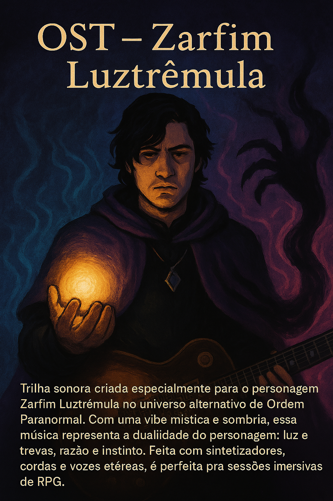

Meus Projetos
Trilha Sonora - Ordem Paranormal: Mistérios de Prypiat

Criação de uma playlist original com sons atmosféricos e ambiências para a campanha de RPG do Cellbit em Prypiat, Chernobyl. A trilha inclui músicas para momentos de investigação, suspense, batalhas intensas, perdas emocionais de personagens e efeitos sonoros que mergulham os jogadores no clima sombrio da narrativa.
これはアニメです (Kore wa animedesu) – feat. Marvyn Izel
Música autoral com participação especial do guitarrista Marvyn Izel. Uma homenagem ao universo dos animes, essa faixa traz um duelo insano de guitarras inspirado em trilhas como Bleach, Naruto e Demon Slayer. Uma explosão sonora geek com solos que arrepiam até a alma! Tudo com suas Yamaha RGX A2 & Strinberg LPX
OST – Zarfim Luztrêmula

Trilha sonora criada especialmente para o personagem Zarfim Luztrêmula no universo alternativo de Ordem Paranormal. Com uma vibe mística e sombria, essa música representa a dualidade do personagem: luz e trevas, razão e instinto. Feita com sintetizadores, cordas e vozes etéreas, é perfeita pra sessões imersivas de RPG.